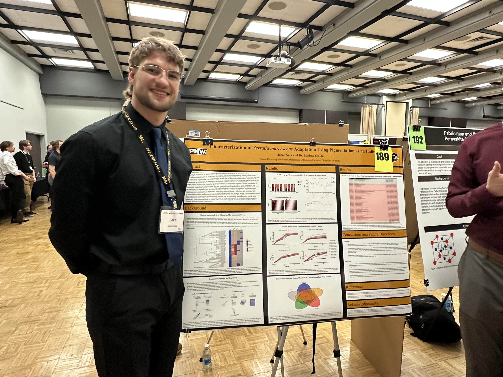
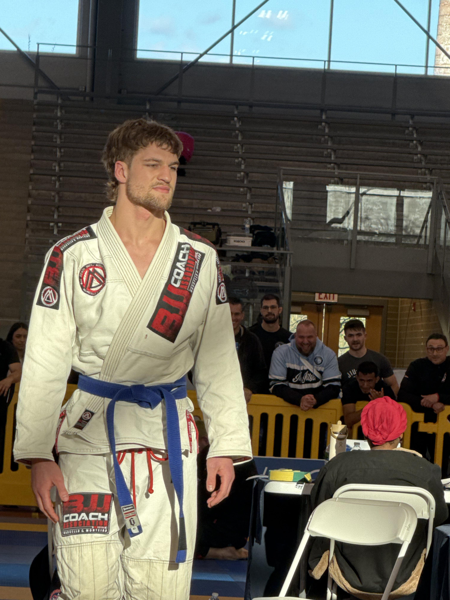
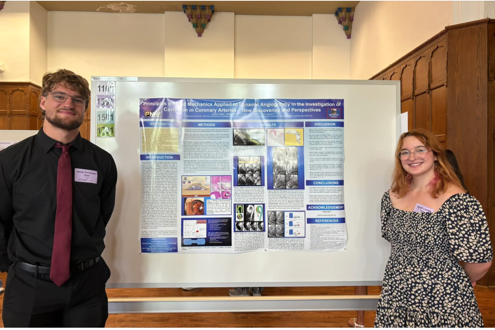
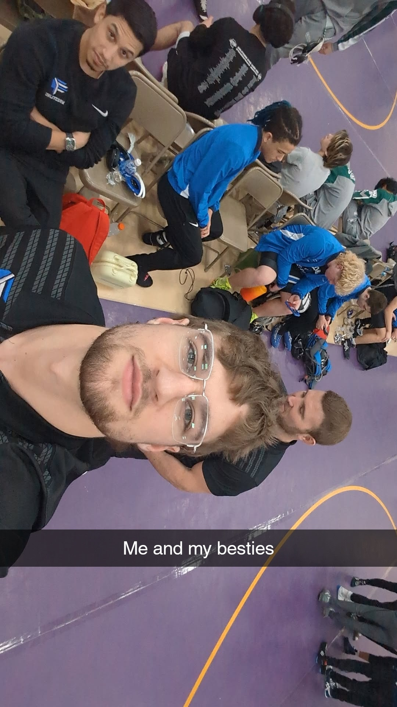
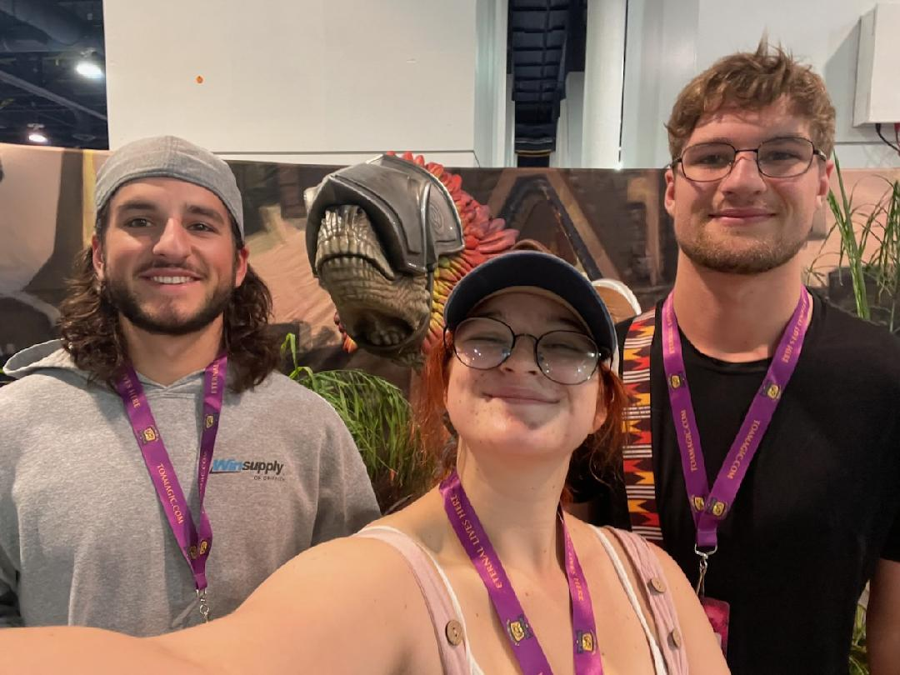
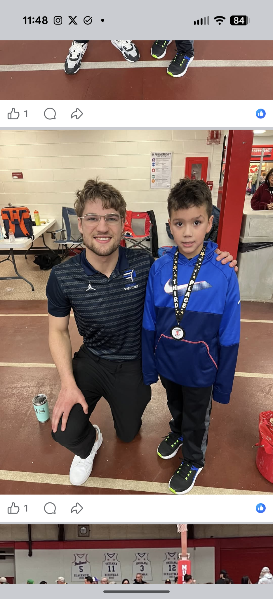
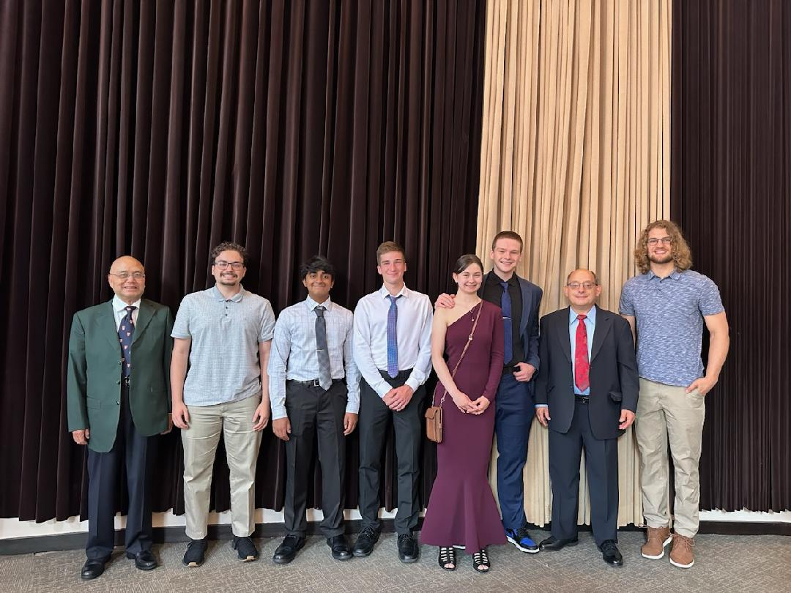

About
Hello, my name is Jake. I am a masters-level microbiologist currently researching Serratia marcescens and its adaptation to urinary-tract-like conditions. My current intrests revolve around studying bacteria with a bioinformatical anylsis. In my free time I like to practice brazilian Jiu Jitsu and tinkering with my projects. I hope that you can find something intresting here. Check out my Work page to see current research and projects that I am currently working on. If you have any questions feel free to reach out
Education
- B.S. with a Minor in Chemistry, Purdue University Northwest | M.S. Candidate, Purdue University Northwest (Expected 2027)
- Certificated in Best practice of Manuscript Writing
- Certificated in Advadanced Medical Problem Solving
Images of Me







Research
My current research focuses on Serratia marcescens and its evolution in urinary tract like conditions using pigmentation as a maker. This research attempts to address novel mechanisms in Serratia especially while undergoing adaptation to urinary tract like conditions. This project is still ongoing. This project has currently had two successful trials and lots of intresting bioinformatical information has been derived!
Research Awards
-PNW Undergraduate Fall Research Grant
-PNW Undergraduate Spring Research Grant
Work Experience
-Purdue Northwest (2024-present)
Multiple instructor roles including supplemntal instructor for anatomy and physiology, and graduate lab instructor. I have taught Intro to Biology 2 and Anatomy and Physiology 2 as a graduate instructor.
-Reichelt Plumbing (2019-present)
Day to day floor operations manager responsible for shop intergity. This includes scheduling, materials ordering, and some field work.
-Lake Central Wrestling Coach (2025-present)
I currently coach wrestling at Lake Central High School. I am the Head JV coach which includes instructing the team, corrednating events and transportation, and recruiting new members. I am also assistant head coach of the Lake Central Youth wrestling program.
Completed Projects
BV-BRC Patric ID xlsx file to heatmap | This project was developed using R studio
Developmental projects
E-Reader | This project will utilise Project Gutenberg and a Raspberry Pi Pico to make a Kindle-like device.
Contact
Reach me at JakesMicrobiology@gmail.com or on GitHub.